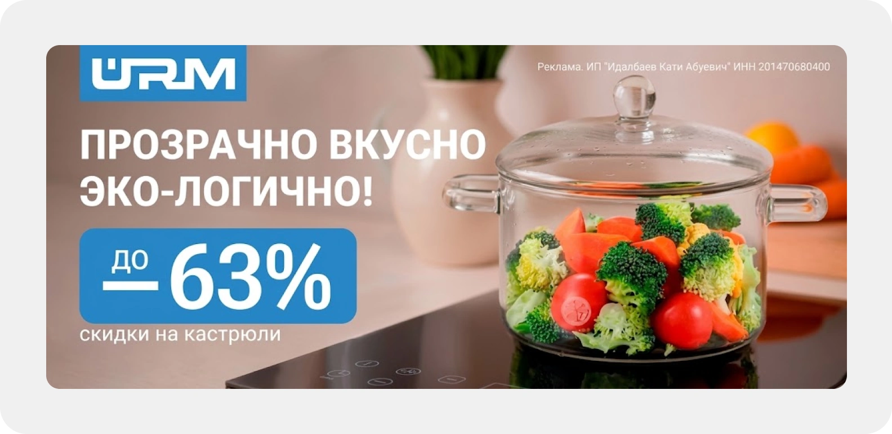
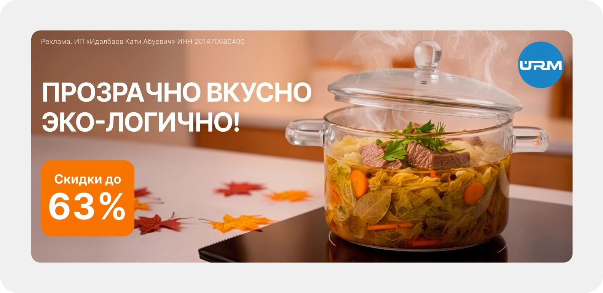
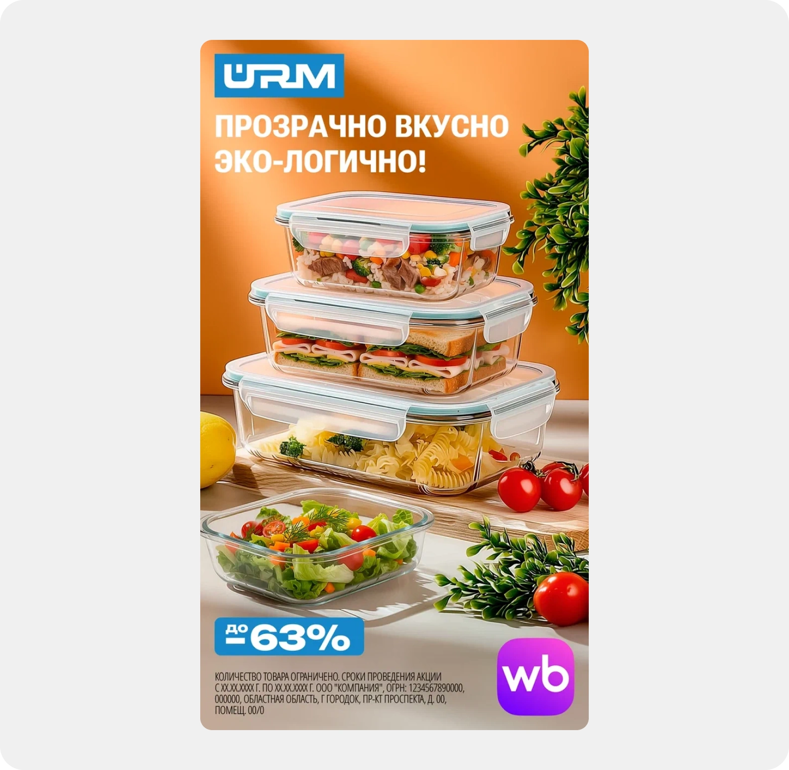
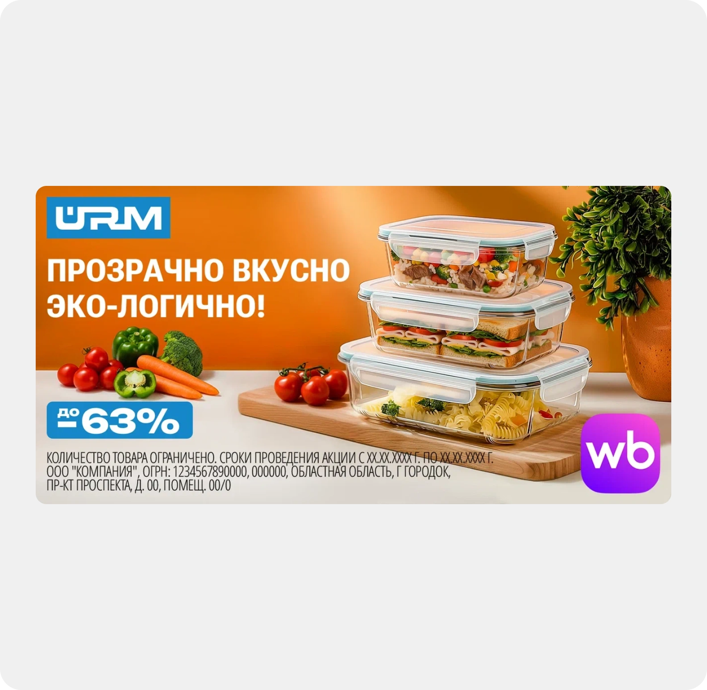
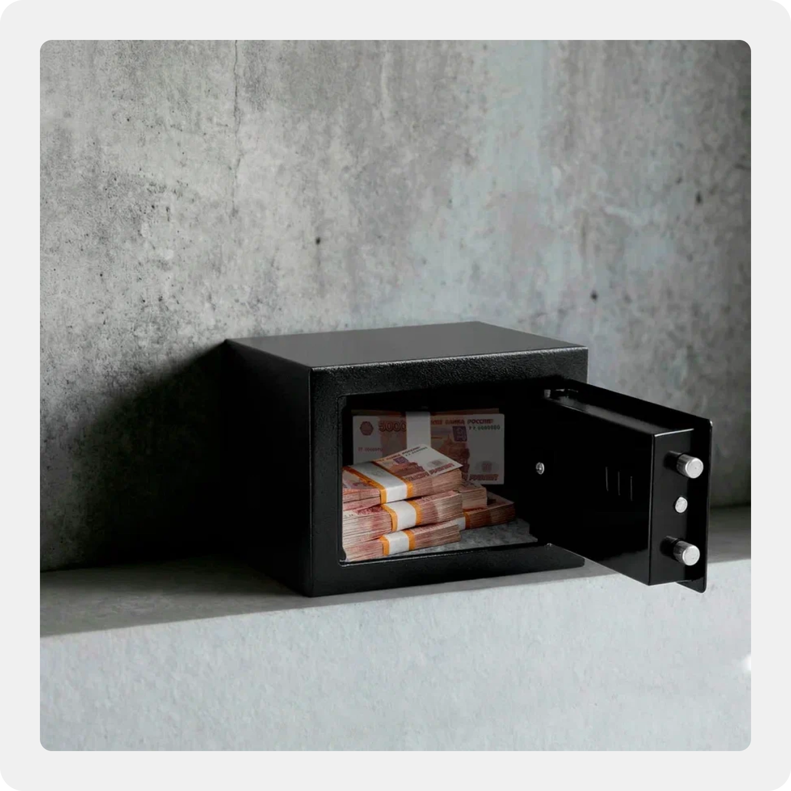
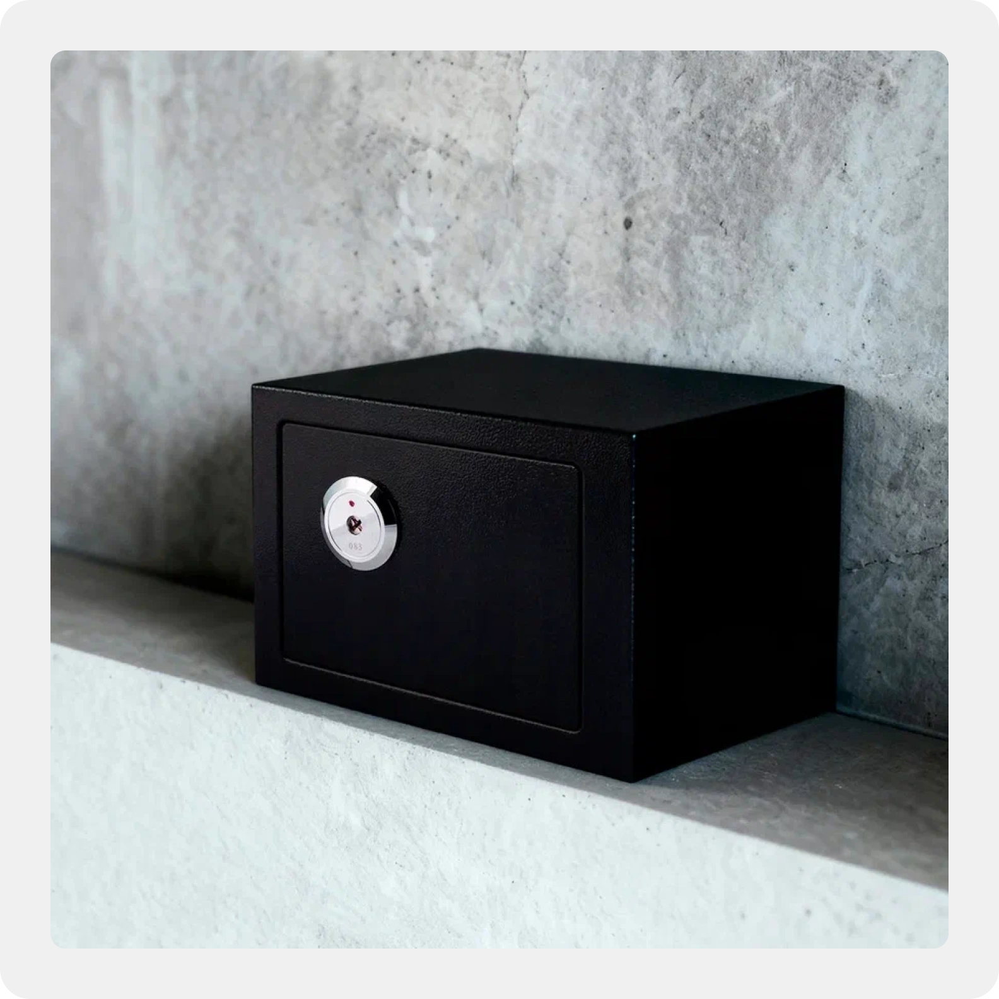
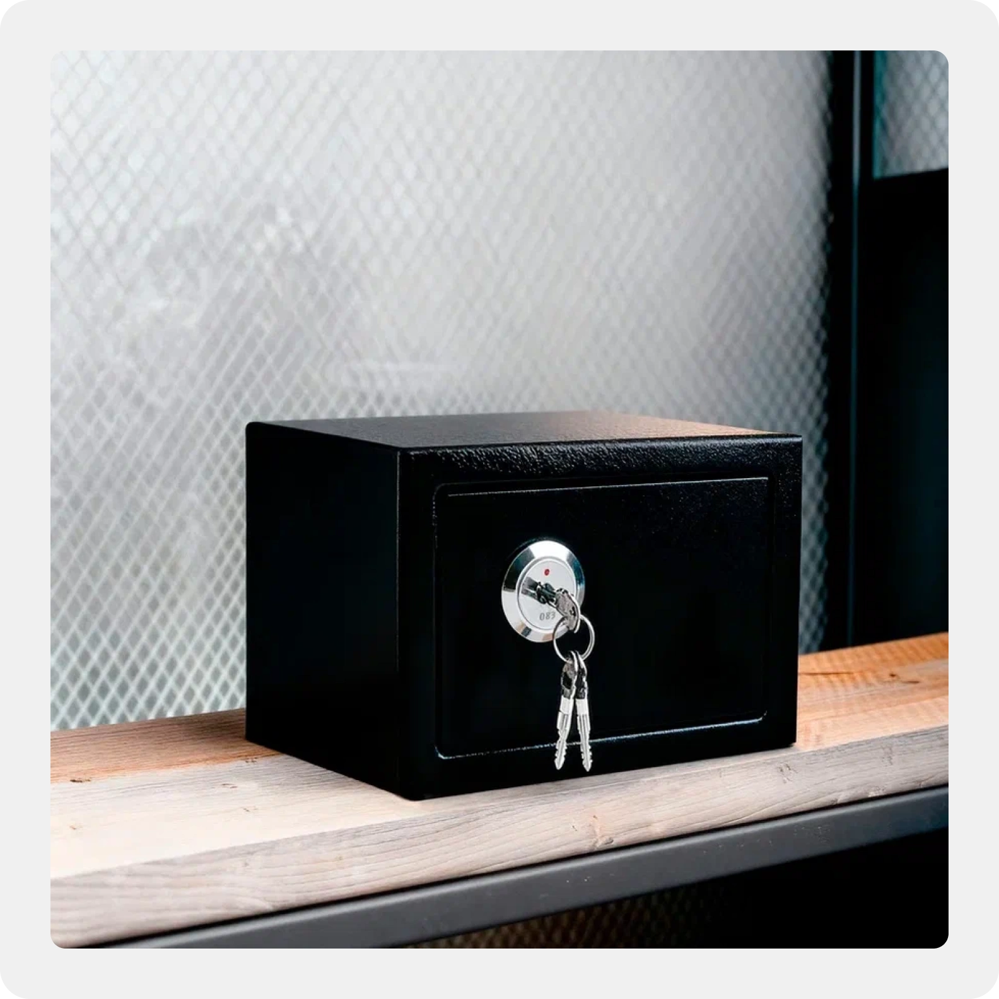
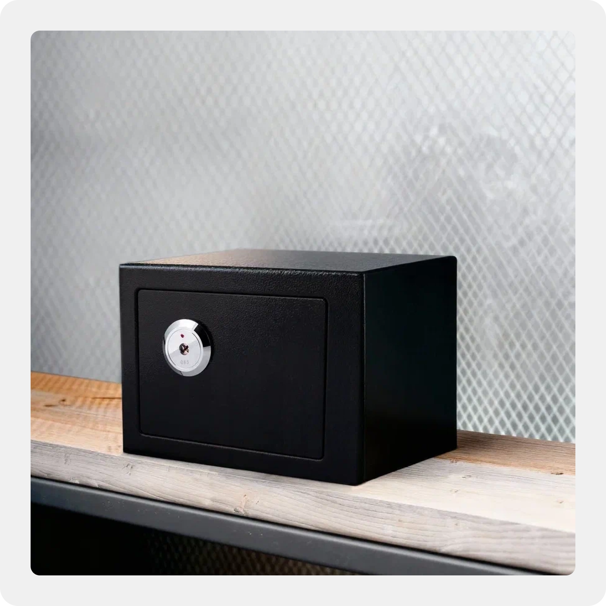

Рекламные материалы и предметная визуализация для бренда URM
Баннеры под десктоп и мобильную версию
Для баннерной рекламы на Wildberries нужно было подготовить макеты под десктопную и мобильную версии сайта.
Особенности и требования:
- Подготовил макеты под десктопную и мобильную версии с учетом технических требований Wildberries.
- Выстроил композицию и иерархию текста. Разместил логотип бренда, слоган, плашку со скидкой и добавил юридические данные по закону о рекламе.
- Перенес исходные изображения с белого фона в сгенерированную кухню, прорисовал прозрачность стеклянных стенок, пар над блюдом и отражения на варочной панели.


Баннеры для экранов и наружной рекламы
Баннеры предназначались для наружных носителей и экранов с последующей анимацией продакшном Wildberries.
Особенности реализации:
- Собрал серию баннеров со стеклянными контейнерами сразу в двух форматах — вертикальном для цифровых экранов и горизонтальном для наружных билбордов.
- Вписал контейнеры с едой в интерьер, выстроил композицию со слоганом, акцентной плашкой скидки и обязательным блоком юридических данных.
- Отрисовал логотип бренда в векторном формате SVG через Illustrator, так как у клиента был только растровый исходник, а правила требовали вектор для печати на больших форматах.
- Оставил макеты полностью по слоям без сведения, чтобы моушн-дизайнеры Wildberries могли сразу забрать элементы в анимацию.


Предметная визуализация сейфов
Клиент запускал новый товар — механический сейф. В наличии были только базовые фотографии на белом фоне, а требовалось показать сейф в интерьере в нескольких состояниях: закрытый, открытый и с разным наполнением. В итоге клиент получил готовую серию карточек в единой стилистике без затрат на аренду студии и фотографа.
Как строился процесс:
- Собрал серию карточек для механического сейфа без проведения студийной фотосессии, имея на руках только базовые фотографии товара на белом фоне.
- Сгенерировал сцены в Nano Banana под две стилистики — у бетонной стены и на полке с металлической сеткой.
- Доработал изображения в Photoshop: убрал артефакты генерации, исправил неточности и выровнял текстуры стен между кадрами, чтобы серия выглядела цельно.
- Подготовил версии с открытой дверцей и разным наполнением — с пачками купюр, паспортом и ключами в замке.




Результаты
Подготовил рекламные баннеры для акций на Wildberries и уличных экранах, а также оформил серию изображений для нового товара в интерьере без студийной съемки.
- Все макеты прошли модерацию площадки с первого раза благодаря точному соблюдению технических полей, отступов и правил маркировки.
- Исходники переданы со структурированными слоями, поэтому команда анимации маркетплейса смогла сразу взять их в работу без уточнений и доработок.
- Клиент получил готовую линейку предметных изображений за несколько дней и сэкономил бюджет на аренду фотостудии.